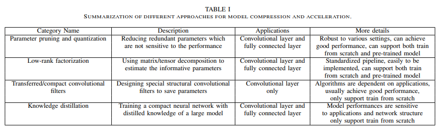

Optimization techniques
Optimization is a critical component of machine learning as it enables algorithms to learn from data and improve their performance on a given task. In machine learning, optimization refers to the process of adjusting the parameters of a model in order to minimize the difference between the predicted and actual output for a given input.
Optimization techniques for embedded devices are similar to those used in traditional machine learning, but they are specifically tailored to the limitations and requirements of embedded systems. Some common optimization techniques used for embedded devices include:
Quantization:
This technique involves reducing the precision of model weights and activations, which can greatly reduce the amount of memory required to store a model.
Pruning:
This technique involves removing unnecessary connections or neurons from a model, which can reduce its size and improve its speed.
Compression:
This technique involves using algorithms to compress model weights and activations, which can reduce the amount of memory required to store a model without significantly impacting its performance.
Knowledge Distillation:
This technique involves training a smaller, simpler model to mimic the output of a larger, more complex model, which can reduce the size and complexity of a model without sacrificing its accuracy.
Hardware Acceleration:
This technique involves designing custom hardware or using specialized processors to speed up the computation required for machine learning, which can greatly improve the performance of embedded devices.
Overall, optimization techniques for embedded devices are focused on reducing the size, complexity, and computational requirements of machine learning models, while still maintaining their accuracy and effectiveness.
